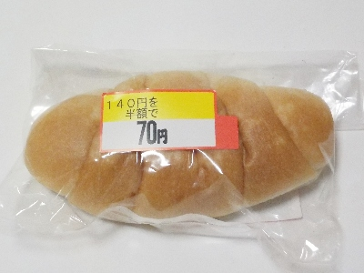
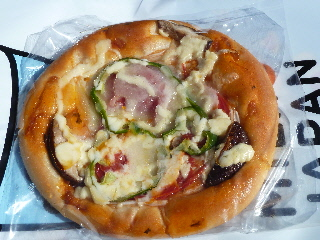
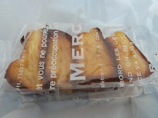
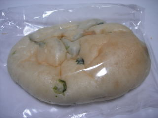
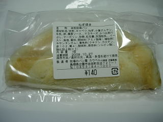
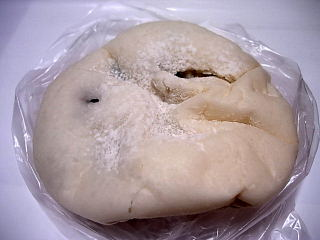

カウベルの塩パンがお買い得でした。
2024/06/17

半額でした。
塩味が効いたバターロールです。くるくるっと巻いて作られていて、真ん中に空洞があって面白いって思いました。
米粉パンらしくちょっと硬めで、味わい深い感じがしました。
原材料に小麦グルテンとありました。私は気にしないです。
島根県出雲市佐田町反辺727-1
2024/06/17

半額でした。
塩味が効いたバターロールです。くるくるっと巻いて作られていて、真ん中に空洞があって面白いって思いました。
米粉パンらしくちょっと硬めで、味わい深い感じがしました。
原材料に小麦グルテンとありました。私は気にしないです。
2014/10/18

トマトソースじゃなくてトマトが入ってて、とってもみずみずしいピザパンでした。
シイタケ入っているので、少し和風な感じです。
水分多いので、トマト入ったハンバーガーやサンドイッチっぽいかな？
米粉パンのせいか、パンは水分でぺっちゃりとしていなくて食べやすかったです。
2012/10/06

焼き色がとっても濃いフレンチトーストですね。
ものすごく焦げてる？って思ったんですが、コゲではなかったです。
パンの耳の部分なので、焼き色が濃くなっていました。（とゆうことはコゲなのかな？）
甘い味がしっかりしみてて、しっとりで美味しかったです。
米粉パンのもっちり感と甘みが、フレンチトーストに良く合ってる気がしました。
洋菓子っぽかったです。
2010/06/20

ツナと何かの菜が入ったパンで、つ菜サンドのようです。なんの菜なのかは分かりませんでした。
ふんわりとしていて甘い味のパンに、味の濃いツナマヨが沢山入っていました。もうちょっとパンが多いとパンの味がしていいかなと思いました。
牧場のパン屋さんなので、牧場の横で小さいお店をやっているのかと思っていたんですが、普通のパン屋さんでした。
食事するスペースまであって本格的です。
田舎らしさを期待していたので、ちょっと意外な気分でした。普通にドライブして買いに行けますね。
2009/10/25

ラピタ平田店で販売していました。今日は農業祭りをしていたようで、出店が並んでいたり、ステージイベントをしていて賑やかでした。
カウベルのパンはお店まで買いに行かなくても、たまにイベント会場なんかで販売していていいですね。
ねぎ焼きですが、原材料の表示が多いですね。正直で好感が持てるんですけど、色んな種類のモノが入っているものですね。お惣菜系のパンは何処のお店のパンでも、きっとコレくらい沢山入っているんでしょうね。
パンでソース、ねぎ、かつおぶし、キャベツ、マヨネーズ、紅生姜等がはさんでありました。ソース味と鰹節味が良く効いているので、濃い味のパンでした。たっぷりソースを付けた、ねぎ焼きや、たこ焼き、お好み焼きの感じがしました。
2009/03/07

大福パンってことで、白いパンの中にはアンとギュウヒが入ってました。確かに大福な感じです。
アンがとっても美味しかったです。甘い大粒の豆も入っていたんですが、それもいい味でした。
ギュウヒが入っているんですが、アンパンとの相性が良く、普通のタイプのあんぱんよりもこっちの方がいいかも？って思いました。
2007/08/11
出雲神話祭りに行ったら販売してました。
商品名とおり、見た目が木の切り株っぽいです。木の年輪のように見えるところがチョコになってました。
米粉パンなのでちょっと甘い味のモチモチパンになっているんですが、そこに甘いチョコシートが入っているので、甘さはちょっと強目ですね。菓子パンって感じよりも新しいお菓子な気分でした。
お米ベースなのでなんとなく和菓子な気分もしました。
2007/04/11
出雲市佐田町にある、牧場のパン屋さん「カウベル」の焼きカレーパンを食べました。
普通の揚げカレーパンと違い、パンの中にカレーが入っているタイプじゃなくて、パンで半分カレーを包んだタイプの商品です。
カレーが見えるパンの中央部分にはマヨネーズと福神漬けが乗ってました。
福神漬けが付いたパンって変わってておもしろいですね。
ちょっと固めで歯ごたえのあるパンにカレーが多く均一に入っているので、パンとカレーの両方とも食べごたえがありました。
カレーパン食べたい時って、しっかり食べたい気分の時が多いで、このバランスはいいですね。
なかなか佐田町に行く機会はないですが、行ったらまたこの焼きカレーパンを食べたいです。
以前にもここのパンを食べた事があったんですが、前とちょっと味が変わった気がします。
個人的には好きな味になりました。